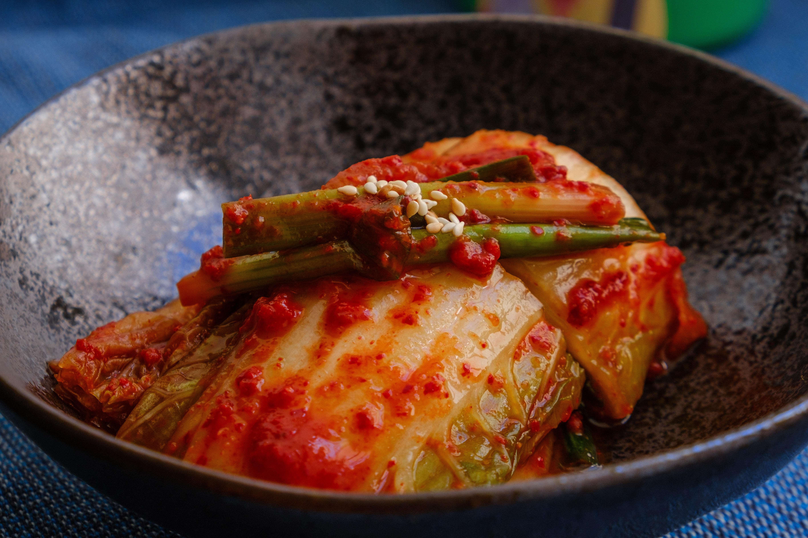

김치
김치는 마치 한식의 대표 선수라는 느낌을 받을 정도로 우리 음식을 대표하는 아이콘처럼 되었습니다. 아니, 어떤 때는 아예 한국 문화를 대표하는 상징으로 나오 는 경우도 있습니다. 그런데 이때 등장하는 김치는 주로 배추김치입니다. 여러분들은 배추김치가 생긴 지 100년 정도밖에 되지 않은 ‘신(新) 식품’이라면 믿으시겠습니까? 그래서 사실은 TV사극에서 고종초기의 수라상에도 이 배추김치가 나와서는 안 됩니다 . 그러면 배추김치는 어떻게 해서 생겨난 것일까요?
사실 김치는 순수 우리말로 생각하기 쉽지만 한자의 ‘침채(沈菜)’가 세월 따라 변해서 생긴 단어입니다. 우리나라는 김치의 종주국답게 약 200 종류나 되는 김치를 보유하고 있다고 하는데, 자세한 것은 서울 코엑스에 있는 김치박물관에 가서 확인해볼 수 있습니다. 그런데 문제는 대다수의 한국인들이 이 김치가 왜 대단한 식품인지 모른다는 데에 있습니다. 이것은 흡사 한국인들이 입을 모아서 한글이 세상에서 가장 훌륭한 문자라고 칭송하면서 정작 어떤 면이 그런가 하고 물으면 아무도 대답하지 못하는 것과 같습니다. 김치 하면 그저 발효식품이다, 유산균이 많은 식품이다 하는 정도만 알 뿐 그게 왜 대단한 식품인지 잘 모르고 있는 것 같습니다. 김치의 위대성을 아주 간단하게 이야기한다면, 김치 담그기는 냉장고가 발명되기 전까지 ‘채소를 겨울 내내 싱싱한 상태로 저장 및 보존시켜주는 제일 뛰어난 방법’이라 할 수 있습니다. 지금은 겨울에도 채소를 재배하고 냉장고도 보편화되어 있어 겨울에 채소를 먹는 일이 전혀 어렵지 않습니다. 사람은 생존상 비타민C를 먹어야 하는데, 이것은 주로 채소를 통해서 해결했습니다. 그런데 겨울엔 채소를 먹을 수 없어 인류는 많은 저장 방법을 고안해냅니다. 많이 썼던 방법이 소금에 절이거나 말려서 보관하는 방법인데 이렇게 했다가 먹으면 아무래도 영양이 많이 파괴되고 맛이 없습니다.
김치는 바로 이런 문제를 해결한 것입니다. 김치가 대단하다는 것은 겨울 내내 채소의 신선함을 그대로 유지할 수 있게끔 저장하는 방법으로 만든 것이라는 것입니다. 다른 나라의 식품에는 이렇게 한겨울에 채소를 싱싱하게 먹을 수 있는 방법이 얼마나 있을지 모르겠습니다. 그런데 김치는 신기하게도 겨울 내내 싱싱할 뿐만 아니라 어떤 단계든 모두 제각각의 맛이 있습니다.담근 바로 직후에 먹는 ‘겉절이’부터 시작해서 중간에 맛있게 잘 익은 단계를 거쳐 마지막 시어질 때까지 맛이 없을 때가 없습니다. 아무리 ‘시어빠져도’ 김치찌개로 해 먹으면 전혀 문제가 없습니다. 아니 김치찌개는 원래 신 김치로 조리하는 게 더욱 맛있기도 합니다. 이런 훌륭한 저장법 덕에 우리 조상들은 겨울에도 비타민C를 섭취하는 데에 전혀 문제가 없었습니다. 특히 고추에는 사과의 50배, 밀감의 2배나 되는 엄청난 양의 비타민C가 있다고 합니다.